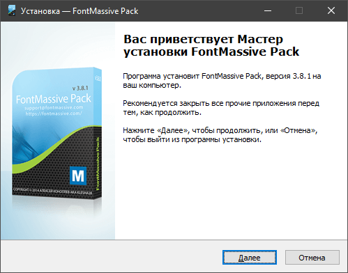

FontMassive Pack Installer v3.8.1
FontMassive Pack - Набор программ для работы со шрифтами.
Официальная страница FontMassive Pack - https://fontmassive.com/
- FontMassive v3.8.1 - менеджер шрифтов
- FonTemp v1.9 - временная установка шрифтов
- FontQuickView v1.4.2 - быстрый просмотр шрифта
- FontDetect v3.11 - распознавание шрифтов на изображении.
- Circular v1.0 - Выпрямление текста по окружности для последующей передачи в программу FontDetect
- LinearText v1.0 - Выпрямление текста по кривой для последующей передачи в программу FontDetect
Очень хороший набор программ. Особенно пользуюсь FontMassive и FonTemp, т. к. большую часть работаю с шаблонами, где используются сторонние шрифты, которых нет в системе.
Устанавливать в систему абсолютно все шрифты глупо, да и багов схватишь много, из которых подвисания системы это самое меньшее зло. В этом и приходят на помощь FontMassive и FonTemp.
Один минус пакета - нет инсталляции.
Я взял на себя смелость собрать всё в инсталляционный пакет, который можно скачать по ссылке с GitHub -

Все программы пакета имеют 32 и 64 битные версии. Инсталлятор распознаёт вашу систему и ставит именно ту битную версию, на каторгой работает ваша система.
Там же, в репозитории, находится и сценарий для компиляции инсталляционного пакета, который каждый может пересобрать под свои нужды.
Т. к. я слежу за выходом новых версий программ, то инсталляционный пакет будет обновляться по мере выхода обновлений или интерфейса инсталляционного пакета.